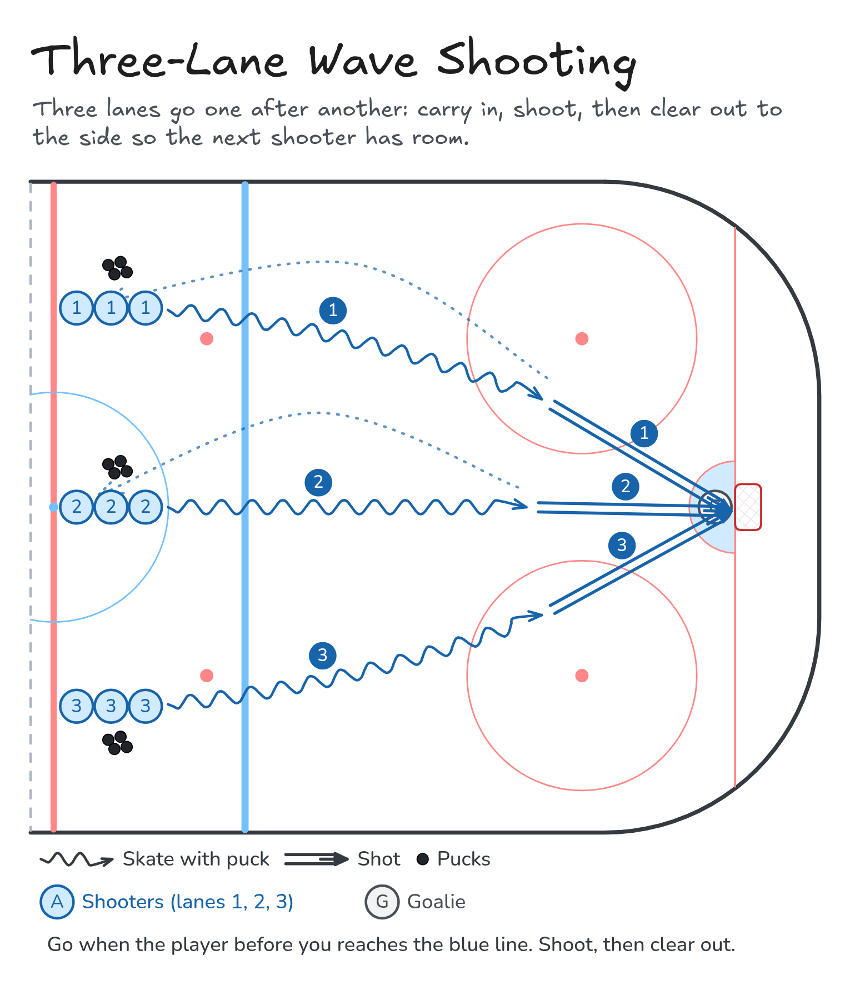

Three-Lane Wave Shooting
Three lanes go one after another: carry in, shoot, then clear out to the side so the next shooter has room.
- Half ice
- Shooting
Watch
Diagram

Coaching points
- Head up while you carry; pick your spot before you shoot.
- Shoot in stride, quick release.
- Go when the player before you reaches the blue line.
- After the shot, clear out to the side. Don't skate through the next shooter's lane.
- Shoot to score: low blocker or low glove.
How it runs
- Three lines at the red line (top, middle and bottom lanes), each with pucks. A goalie in net.
- Lane 1 carries in and shoots.
- Lane 2 goes when lane 1 reaches the blue line, and shoots. Lane 1 clears out to the side.
- Lane 3 goes next and shoots. Lane 2 clears out.
- Everyone returns to their own lane's line. The next wave goes when the goalie is set.
Downloads

Open the Excalidraw file in Excalidraw to change the diagram.